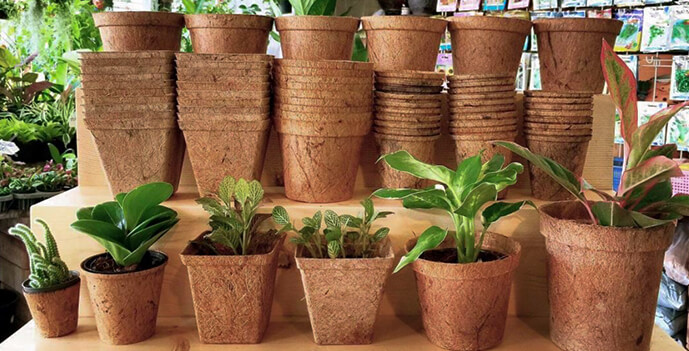
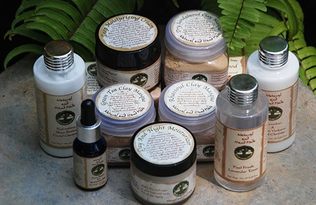
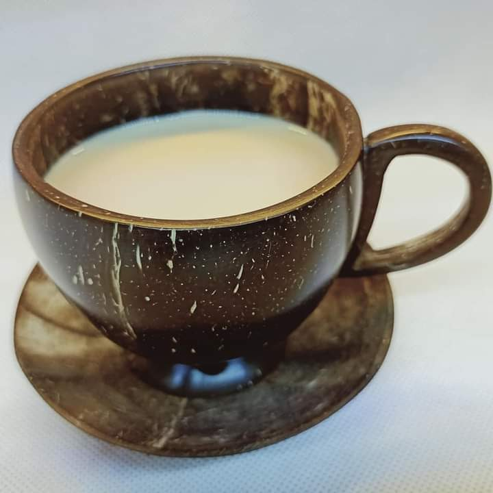
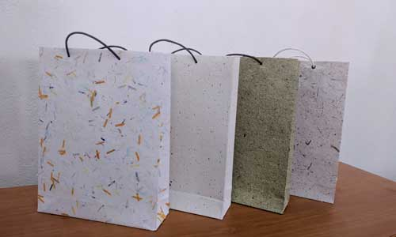

Different types of Eco-friendly products in SL
There are many types of eco friendly products that are manufactured in Sri Lanka. For example, Eco vases, books, skin care products, cups, bags and etc. These products are made of coir, recycled paper, coconut husks and many more natural items. There are some examples in the following table.
Eco Vases
Coir pots are made up of the coconut hull that is derived from the fibrous body between the husk and the coconut.Gardeners looking for faster cultivation, an excellent root system and re-establishment without any shock from transplanting use Coir Pots.(UGAOO, 2020)
Skin care products
These are made of all natural ingredients and are packaged mindfully.
Eco Books

Recycled paper can be manufactured relatively easily, with end products competitive in quality to those made from virgin materials.(Jain & Webb, 2012)
Eco Tea cups
Coconut shells are used after water is extracted and pulp is taken out for food. Creating beautiful products and saving the pollution.(recycle.GREEN, 2017)
Eco Bags
Using reusable range of bags for a durable and cost effective experience while preserving the quality of your surrounding. The range of Green Bags are affordable and accessible in a wide range of colours, sizes, designs, shapes and styles. (Temp, 2019)
| Product | Eco Vases |
|---|---|
| Uses |
|
| Cost | Rs.10 to Rs.300 |
| Made of | Coconut Coir |
| Product | Skin care Products |
| Uses |
|
| Cost | Expensive |
| Made of | Natural Ingredients |
| Product | Eco Books |
| Uses |
|
| Cost | Less Expensive |
| Made of | Old paper and water |
| Product | Eco Tea cups |
| Uses |
|
| Cost | Less Expensive |
| Made of | Coconut Shell |
| Product | Eco Bags |
| Uses |
|
| Cost | Less Expensive |
| Made of | Natural or Synthetic fibers. |
| Summary of Eco products | |
| Product | Uses | Made of | Cost | Description |
|---|---|---|---|---|
| Eco Vases |
|
Rs.10 to Rs.300 | Coconut Coir | Coir pots are made up of the coconut hull that is derived from the fibrous body between the husk and the coconut.Gardeners looking for faster cultivation, an excellent root system and re-establishment without any shock from transplanting use Coir Pots.(UGAOO, 2020) |
| Skin care Products |
|
Expensive | Natural Ingredients | These are made of all natural ingredients and are packaged mindfully. |
| Eco Books |
|
Less Expensive | Old paper and water | Recycled paper can be manufactured relatively easily, with end products competitive in quality to those made from virgin materials.• (Jain & Webb, 2012) |
| Eco Tea cups |
|
Less Expensive | Coconut Shell | Coconut shells are used after water is extracted and pulp is taken out for food. Creating beautiful products and saving the pollution.(recycle.GREEN, 2017) |
| Eco Bags |
|
Less Expensive | Natural or Synthetic fibers. | Using reusable range of bags for a durable and cost effective experience while preserving the quality of your surrounding. The range of Green Bags are affordable and accessible in a wide range of colours, sizes, designs, shapes and styles. (Temp, 2019) |
| Summary of Eco products | ||||